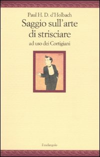
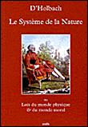
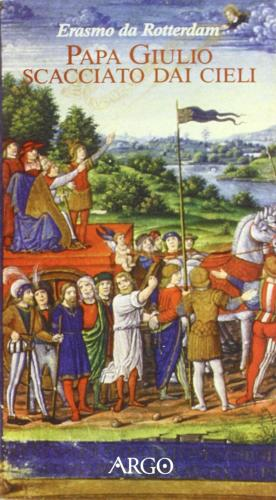

1:09:00 · 4 OPERE
Comunicazione vuota o svuotata? Il "Saggio sull'arte di strisciare" del Barone d'Holbach.
Il filo del discorso
Il Saggio sull’arte di strisciare diventa lo spunto per un’ampia riflessione sulla comunicazione, sulla dipendenza dal potere e sull’autonomia del giudizio. Nella prima parte il relatore critica televisione, pubblicità e industria culturale, sostenendo che la comunicazione diretta a produrre un effetto possa svuotare il rapporto con la realtà. Il discorso attraversa esempi politici e mediatici, le controversie sulla pandemia e il timore di un conflitto nucleare, richiamando anche il film Il dottor Stranamore. Una sezione centrale colloca d’Holbach nell’Illuminismo, discute il Sistema della natura, i salotti intellettuali, la critica religiosa e l’idea di un’etica naturale; compaiono i riferimenti ad Andersen e a Erasmo. Nell’ultima parte la lettura del saggio si concentra sulla doppiezza del cortigiano, sulla rinuncia alle opinioni personali e sulla flessibilità al servizio del padrone. Il relatore estende questo ritratto al presente e conclude contrapponendo la subordinazione a una società di persone capaci di opporsi al potere. Le valutazioni politiche, sanitarie e storiche sono del relatore.
I libri nel discorso

Saggio sull’arte di strisciare
Copertina: Il Melangolo, 2009
Titolo, autore e editore il melangolo sono presentati all’apertura; dalla parte intorno a 48:45 seguono numerose letture commentate.
Passaggio 0:28 ↗ · Fonti e libro ↗
Sistema della natura
Copertina: Coda, 2008 · edizione francese
Copertina dell’edizione francese Système de la nature, testo stabilito da Jean-Pierre Jackson. La lingua e l’edizione dell’esemplare citato nel video non sono identificate.
Titolo e anno 1770 compaiono nella presentazione del materialismo di d’Holbach; l’opera è richiamata ancora a 44:44.
Passaggio 33:54 ↗ · Fonti e libro ↗
I vestiti nuovi dell’imperatore
Copertina: Rizzoli, 2014 · eBook di riferimento
Il relatore nomina Andersen e la fiaba con il suo titolo durante la digressione sul bambino che riconosce l’imperatore nudo.
Passaggio 36:56 ↗ · Fonti e libro ↗
Papa Giulio scacciato dai cieli
Identificazione probabile
Copertina: Argo, 1998
Erasmo è nominato prima di un titolo che i sottotitoli rendono con il participio caduto anziché scacciato.
Passaggio 39:47 ↗ · Fonti e libro ↗